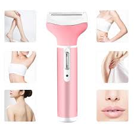
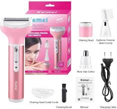
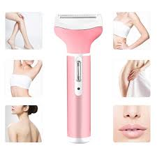
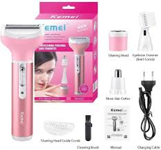

آلة إزالة الشعر Kemei KM-6637
 



مقدمة
آلة Kemei KM-6637 تعتبر واحدة من الحلول المبتكرة والعملية لإزالة الشعر، حيث تجمع بين عدة وظائف في جهاز واحد. تم تصميمها لتلبية احتياجات النساء في جميع أنحاء العالم، مما يسهل العناية الشخصية بشكل فعال ومريح.
الميزات الرئيسية
- أربعة في واحد: تحتوي على عدة ملحقات تناسب مختلف احتياجات إزالة الشعر.
- قابلية الشحن: تأتي هذه الآلة مزودة ببطارية قابلة لإعادة الشحن، مما يسمح لك باستخدامها بدون الحاجة إلى توصيلها بمصدر كهربائي.
- تصميم محمول: تتميز بحجمها المناسب وخفة وزنها، مما يسهل حملها.
- أداء متميز: تستخدم تقنية متطورة لإزالة الشعر بشكل فعال وسريع.
- سهولة الاستخدام: تصميم مريح يسهل استخدامها، حتى للمبتدئين.
- صيانة منخفضة: تنظيف الملحقات بسهولة بعد الاستخدام.
كيفية الاستخدام
- التحضير: تأكدي من شحن الجهاز بالكامل قبل الاستخدام.
- اختيار الملحق: اختاري الملحق المناسب لمنطقة إزالة الشعر.
- الاستخدام: استخدمي الجهاز بحركات لطيفة لإزالة الشعر.
- التنظيف: بعد الانتهاء، قومي بتنظيف الملحقات بالماء الدافئ.
الاستنتاج
آلة Kemei KM-6637 هي خيار ممتاز لمن تبحث عن حل شامل وفعال لإزالة الشعر. تعتبر هذه الآلة استثماراً جيداً في روتين العناية الشخصية، مما يجعلها قطعة أساسية في مجموعة أدوات الجمال.